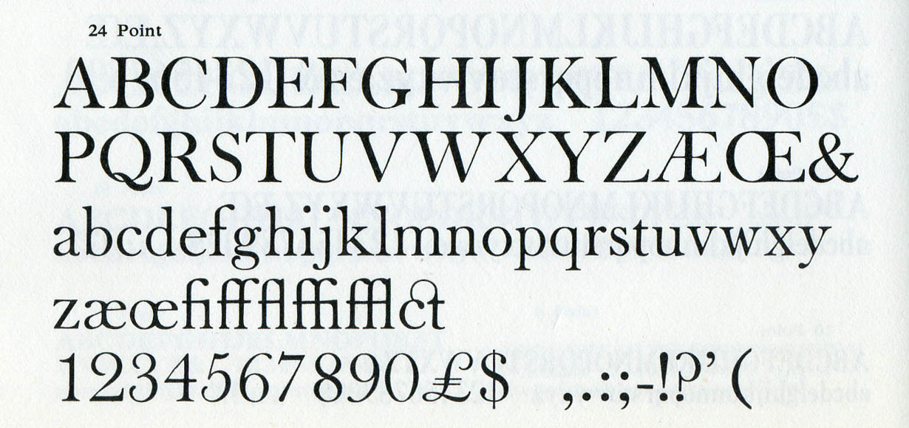
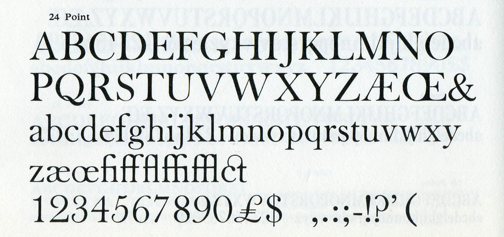

Open Baskerville
Welcome to Open Baskerville, an open source project to create a digital revival of the famous ‘Baskerville’ typefaces. To be more exact, Open Baskerville is based upon Fry’s Baskerville, a Baskerville-inspired derivative created by Isaac Moore, a punchcutter who worked for the type foundry of Joseph Fry. The font is dual-licensed under the Open Font License and the GNU GPL version 3.
The why
Back to top ↑With the written word an absolute fundamental component of daily communication, typography and fonts are vital to providing aesthetic harmony and legibility to our textual works. There are thousands of fonts available, of which only a small number are useful or any good for setting vast quantities of text, and of which an even smaller number are available to be freely distributed and shared. This project aims to help close that hole, beginning with a Baskerville revival.
The how
Back to top ↑The project has an issue tracker and messaging board, and for ease of contribution the font source UFO files are available via a Git repository on github.com. To get started you’ll want to ‘fork’ a copy of the files. From there everyone can make their edits and still have their changes merged back into the main ‘trunk’ of the project. The alternative is to grab the files in a ZIP bundle.
Please feel free to download the files and add to the font — you could add a glyph for a character that is missing or adjust the kerning for glyph combinations. To have your changes merged back into the main trunk of the project for others to benefit from please email me.
Using Git
Obtaining Git is easy, whether you’re using Windows, Mac OS X, or flavours of Linux, using your favourite package manager. Once you have Git installed, sign up to GitHub. You’ll want to fork my repository and clone it, making your changes. This allows you to make all the edits you desire and when you want to push the changes back up, you can send me a pull request for me to pull your changes up for merging. Let’s revise:
- Sign up to GitHub.
- Fork my repository — click on the
 button.
button. - Clone the forked repository locally onto your computer (where
$USERis your GitHub username):git clone git@github.com:$USER/open-baskerville.git
- Make your changes to the font files.
- Commit all your changes (commits all changed files). You’ll also be prompted to add a commit message in your favourite
editor to let others know what changes you’ve made.
git commit -am
- Push to the forked repository — this would be your repository you forked from me, and here you’ll
just want to upload your changes to your repository under your name on GitHub:
git push
- Send me a pull request so I am notified of your changes and can choose to merge them in with the original repository. You can do this from your project’s page on GitHub: simply click on the
 icon, fill in a brief note what glyphs you’ve added or otherwise changes you’ve made and who to send them to (in this case me, Simon Pascal Klein by the nick of klepas).
icon, fill in a brief note what glyphs you’ve added or otherwise changes you’ve made and who to send them to (in this case me, Simon Pascal Klein by the nick of klepas). - Finally, to ensure you have the latest version of the font files, including any changes that I have pulled from you,
you’ll want to update your branch regularly:
git pull
For more information on this workflow see the GitHub guides.
The history
Back to top ↑For historical specificity and correctness, and entertain typophiles, Open Baskerville is to be a revival of a Baskervillian ‘clone’ by Isaac Moore, a punchcutter who worked for the type foundry of Joseph Fry in Bristol and later in London. It is believed that he did so because Baskerville had little financial success, never selling his types which were at their making considered vulgar in their stark contrast of the letter-shapes and ‘damaging to the eyes’. Further, no other printer had the technology to accurately print with the high-contrast, sharp hairline punches at the time anyway. Fry’s Baskerville was created as a derivative of Baskerville that could be used with the less expensive papers, presses, and the inks that were common.
Moore created a huge series of fonts in this style, complete with ornaments, a (subjectively weak) italic, and old-style figures for the text weights. The typeface was cut around 1766 and the original matrices still exist. They were purchased from the Fry foundry by Stephenson, Blake & Co. in 1910 having already acquired the Fry foundry materials off the Sir Charles Reed foundry. The surviving punches and even original matrices are in the collection of the Type Museum, London and The Smithsonian National Museum of American History, though both inaccessible, the latter due to their location in a warehouse containing asbestos.
Sadly only two complete original specimens exist, both in libraries that are currently inaccessible. The first, a broadside specimen printed in Bristol in 1766 is currently housed at the Providence library and the second specimen is in the Royal Library in Stockholm. A copy of the 1766 specimen was reprinted in Updike’s Printing Types, figure 276 though obtaining a high-quality scan is desirable. A contact attempt was made at the Providence with no luck whereas the cost of having a Stockholm copy digitised is presumed to be around the USD $100 mark — this is an option worth considering. There is a very large, multi-page specimen in the Library of Congress, but it only shows the ‘Quosque Tandem…
’ quote and it cannot be photographed. Stephenson, Blake are likely to have edited and extended the typeface, as there are subtle variations and differences in the 24-, (possibly 30-,) 36- and 48-point specimens that were made in 1913 and consequently most of the accessible specimens feature them. Below are featured two extracts from two separate scans of Stephenson, Blake specimens. They are both of the Stephenson, Blake Fry’s Baskerville, which in some sizes was produced entirely from the original matrices. In the smaller sizes the letters with descenders were replaced with shorter descenders in the twentieth century when the baselines of of metal type were standardised. (These are cropped exports; → the full-sized version with u&lc characters, additional ligatures and lining figures: one and two respectively.)
{kind=link}
{kind=link}
{kind=link}
 

Morris Fuller Benton revived the Moore design for ATF and it first appears in the 1923 ATF specimen (also note a 12pt scan from 1923), as well as later again in the 1934 ATF specimen and in the 1941 ATF specimen. Interestingly Benton did not choose to use Moore’s italic, instead opting for an italic which was in fact copied from the type of Richard Austin that English Monotype later made under the name of ‘Bell’ and also very similar to ‘Bulmer’. So also up for discussion is the selection of an italic; Moore’s italic has been received poorly and as just noted, even Benton choose to replace it. We may do the same, using or basing it off an existing italic or if we’re feeling particularly fruity, draw our own.
{kind=link}
{kind=link}
For further information please see the colloquy over Fry’s Baskerville at Typophile.com.
FAQ
Back to top ↑- Where can I download the font files?
- They’re available via a Git repository on GitHub or as a ZIP archive. To download directly or fetch via Git, see Using GitHub under the How section above.
- With access to the files won’t someone be able to spoil the pie for all of us?
- No. All changes back into the ‘trunk’ of the font have to be approved. Commit access to make changes will be given to those who have made numerous quality contributions.
- What license is the font released under?
- The Open Baskerville font is licensed under the Open Font License as well as the GNU GPL version 3. The OFL essentially means you can share, edit, and even redistribute the font so long as you don’t sell it by itself — it may be distributed as part of a software package and even sold in this state whereas the GPL version 3 requires ‘source’ font files of all derivatives to be made available. Both licenses are approved by the Free Software Foundation, and our ultimate goal is to have the font as widespread as possible, even shipping with commercial software whilst the font source files are secure to remain accessible for contribution.
- I’ve fixed something or otherwise made a change to the font, now what?
- Great — thank you! If you’d like it to be added to the font please email me or use GitHub to send me the changes (see Using GitHub under the How section above).
- How did this all start?
- After a lengthy discussion on a call for open fonts on Typophile.com James Puckett kindly released some work he’d been doing on a Baskerville revival into the public domain. This is the foundation of this work. Mentions and kudos should go out to James Puckett and James Mosley for the love, work, and research they’ve both invested in this typeface. For more context on Open Baskerville and libre fonts see the accompanying blog post.